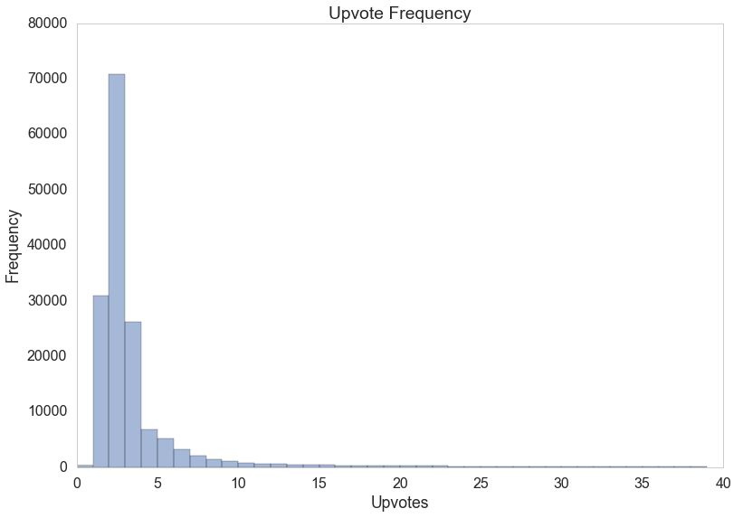
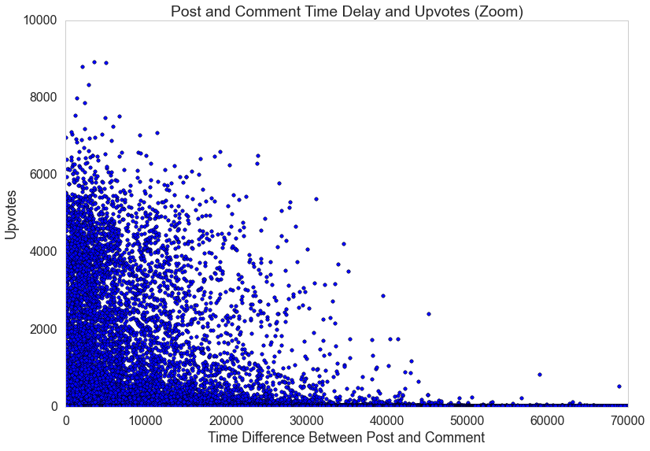
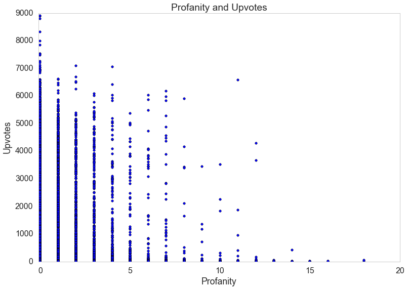
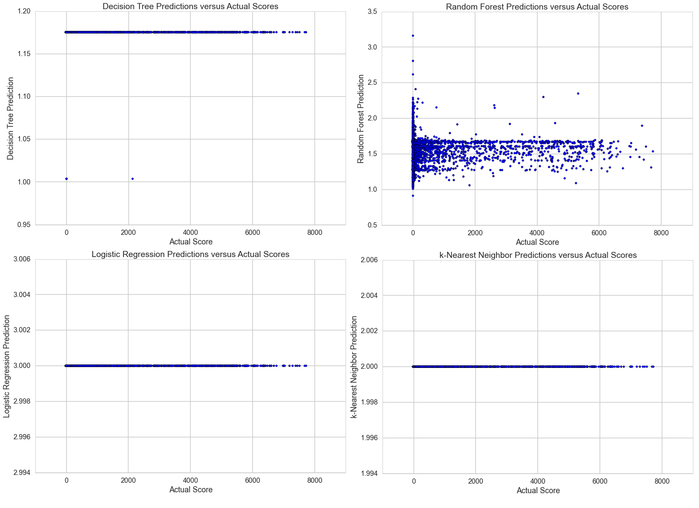

Video Summary
Background
Introduction to reddit
In our project, we analyzed and hoped to understand more about a website called reddit. reddit is a news aggregator, a fansite, or a host for creative pursuits -- all by way of its unique voting system. Users make contributions called threads, which consist either of text or a single link, to topics called subreddits (identified by the "/r/" prefix). These threads receive up- and downvotes from other users, which are combined along with the lifetime of the thread into a "score" that is used to determine the default display order of threads. Other users can in turn comment on these threads, and these comments are also voted upon, scored, and ordered in a similar manner.
/r/AskReddit
Our analysis was focused on the subreddit /r/AskReddit, which is a particularly structured subreddit. Threads are necessarily titled with an open-ended question and have minimal body (perhaps outlining context), and top-level comments must respond to the question asked.

Motivation
Within the context of /r/AskReddit, our team hoped to comprehend the essence of reddit -- what is it about a comment that determines its score? That is, why are certain answers popular and others not?
First Steps
Identifying the Problem
Our problem, then, would be one of regression. We hoped to first identify features that characterize responses and to then predict the popularity of new /r/AskReddit answers -- that is, the scores of top-level comments.
The Data
Comment scores on reddit usually take a while to stabilize (usually until the thread in which they are posted fall off the front page), so we selected the twenty-five threads with the most comments from each of the four quarters of the last year and scraped the top-level comments from therein. Doing so was quite problematic, as reddit's servers impose quite heavy limitations on those who seek data from them (in the form of HTTP Status Code 429: Too Many Requests), but we eventually managed to obtain over 160,000 responses to the 100 questions we had chosen by using BeautifulSoup, a scraping library, and praw, the Python reddit API Wrapper.
Data Exploration
With the data in hand, we started by exploring, attempting to discover relationships between the attributes of replies and their scores as well as to characterize the dataset. Here are some of the interesting relationships we found:
 As expected, most comments have extremely low scores, indicating either that they remained undiscovered or that no one considered them noteworthy enough to upvote.
 The most highly-voted comments were posted within six hours of the thread posting.
 More profanity generally means lower scores.
And finally, special usernames of the variety "PM_ME_YOUR_" were associated with comments of higher scores than average.
Predicting Comment Scores
After selecting data features, we used four supervised learning techniques in order to attempt to learn the relationship between these features and the ultimate score of a comment.
- Decision Trees
- Random Forest
- Multinomial Logistic Regression
- k-Nearest Neighbors
After applying these techniques, we tried to test them against the comments in November 2015's threads. The results were not particularly inspiring:

All of our models' predictions were clustered around the training set's median score of 2. In fact, the constant prediction of the median yielded the best results according to the Mean Absolute Error metric.
Future Steps
Though our results were somewhat discouraging, we still found the project to be a learning experience. We gained insight into the problem and identified ways to improve our prediction in the future. Specifically:
- As is evident from the chart above, the dataset we scraped was extremely skewed by the "superstar" nature of voting, which likely negatively affected our machine learning algorithms. In a future attempt, we would be better served by adjusting for this skew..
- We chose a rather large number of features to regress upon, which caused problems at the very least for our k-Nearest Neighbors algorithm.
- There were ways to prune our dataset that might have aided our analysis.